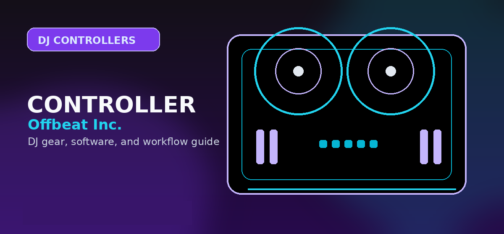

Best DJ Controllers Under $1,000
A price-ladder buying guide for DJs stepping beyond entry-level gear but not ready for flagship standalone systems or pro club hardware.

Disclosure: This page uses affiliate links. We may earn a commission at no extra cost to you. Full disclosure →
A price-ladder buying guide for DJs stepping beyond entry-level gear but not ready for flagship standalone systems or pro club hardware.
Best DJ controllers under $1,000: ranked by buyer type
The under-$1,000 tier is the missing bridge between budget beginner controllers and professional standalone systems. Buyers in this range are usually ready for better I/O, more performance controls, stronger software integration, and a rig that can survive practice plus light gigging.
DDJ-FLX4
For many readers, the best under-$1,000 purchase is still well under the ceiling. If the buyer is a beginner, the FLX4 may be a smarter purchase than jumping to a large four-channel controller too soon.
RANE ONE / premium Serato deals
When pricing or used/refurbished availability brings motorized controllers near the $1,000 decision zone, Serato/scratch-focused buyers should compare them. Do not recommend them to ordinary beginners.
Confirm today’s price, stock, and return policy before buying.
Under-$1,000 decision table
| Buyer type | Best direction | Why | Do not buy |
|---|---|---|---|
| Beginner with budget | FLX4 first | More controlled learning path and lower regret risk. | A four-channel unit just because the budget allows it. |
| rekordbox creative step-up | GRV6 | Four channels and Groove Circuit give a real reason to upgrade. | Tiny entry controllers with no growth path. |
| Serato scratch learner | Motorized controller if budget fits | Moving platters matter for scratch feel. | Static-jog controllers if scratching is the core goal. |
| Mobile event DJ | Controller with mic input, solid outputs, and software reliability | Gigs need dependable I/O more than flashy features. | App-only or toy-level units. |
| Standalone-curious buyer | Compare Mixstream-style systems or save for XDJ/Prime tier | Standalone under this ceiling may involve compromises. | Any standalone system bought only because it avoids a laptop. |
When to spend less than $1,000
A reader who has not played a real practice set yet should usually spend less. Put the saved money into headphones, monitors, legal music, a laptop stand, USB drives, and learning time. Under-$1,000 pages convert well, but the editorial recommendation should still prevent overbuying.
Under-$1,000 buying guidance
This price tier should act as a decision bridge, not just a list of products. A reader with $1,000 can still make the wrong purchase by buying the largest controller instead of the right workflow. The strongest way to shop this tier is to split the decision into beginner, creative rekordbox, Serato/scratch, mobile-event, and standalone-curious use cases.
The GRV6 is the important current-model addition because it gives this tier a fresh AlphaTheta story with four channels and Groove Circuit. However, many beginners should still spend less. An FLX4 plus headphones, monitor speakers, music, and practice time may produce better results than a larger controller alone.
Use this page to feed three downstream paths: GRV6 review for creative four-channel buyers, motorized controllers for scratch buyers, and standalone systems for readers who actually want a laptop-free setup. This keeps the under-$1,000 page from cannibalizing every controller query.
Under-$1,000 shortlist logic
Use this price tier when a beginner controller feels cramped but a flagship controller is not justified yet. The best under-$1,000 controller should solve at least one real limitation: better outputs for events, four channels for layering, larger jog wheels for pitch control, stronger pads for performance, or included software that avoids another subscription.
Do not spend nearly $1,000 just to get a larger version of the same workflow. Spend it when the controller clearly improves reliability, performance depth, or long-term software compatibility. A good under-$1,000 pick should still feel useful after a year of practice.
How to use this guide in a real DJ setup
Before changing gear, software, or workflow, connect the recommendation to an actual use case: home practice, recorded mixes, streaming, mobile events, club preparation, or production crossover. A choice that looks best on paper can still be wrong if it adds setup friction or does not match the way you will play.
The safest workflow is to test the setup exactly as you will use it, then document the cable path, software version, library source, and backup plan. That prevents most of the avoidable failures that happen when DJs buy the right-looking tool but never validate the whole system.
How to spend under $1,000 without overbuying
The best under-$1,000 controller is the one that solves your next two years, not the one with the longest spec list.
- $300–$500: best for serious beginners who still need portability and simple setup.
- $500–$800: best for four-channel control, better I/O, stronger build quality, and better effects workflow.
- $800–$1,000: best when you need near-pro controls but are not ready for a standalone system.
Official product and support pages
Spend under $1,000 when you need better I/O and controls, not just a bigger chassis.
FLX10 is the stretch pick; midrange controllers make sense only if the extra channels and outputs match real gigs.
Check included software unlocks before comparing sticker prices.
Use these official pages to confirm current specifications, software compatibility, and support details before buying.
Frequently Asked Questions
What is the best DJ controller under $1,000?
For creative rekordbox users, the DDJ-GRV6 is the key current-model recommendation. For beginners, the FLX4 may be the better buy even though it costs less.
Should I spend the full $1,000 on my first DJ controller?
Usually no. A beginner often gets better results from a sensible controller plus headphones, speakers, music, and practice time.
Are standalone systems available under $1,000?
Some compact standalone options may fit depending pricing, but flagship standalone systems usually sit above this tier.
What should I check before buying this DJ controller?
Confirm software compatibility, audio outputs, headphone cueing, driver support, and whether the controller fits your real practice or gig setup.
Is this controller category good for beginners?
It can be, but beginners should prioritize reliable software support, simple routing, and controls that teach transferable DJ habits before paying for advanced performance features.
Under-$1000 price reality check
This bracket moves quickly because bundles, open-box stock, and seasonal discounts can push a controller above or below the line. Before buying, confirm the live checkout price, included software license, return window, and whether a case or cables are required. If the cart lands closer to entry-level money, compare controllers under $500. If the buyer mainly wants screens or laptop-free operation, compare standalone DJ systems before paying midrange controller prices.